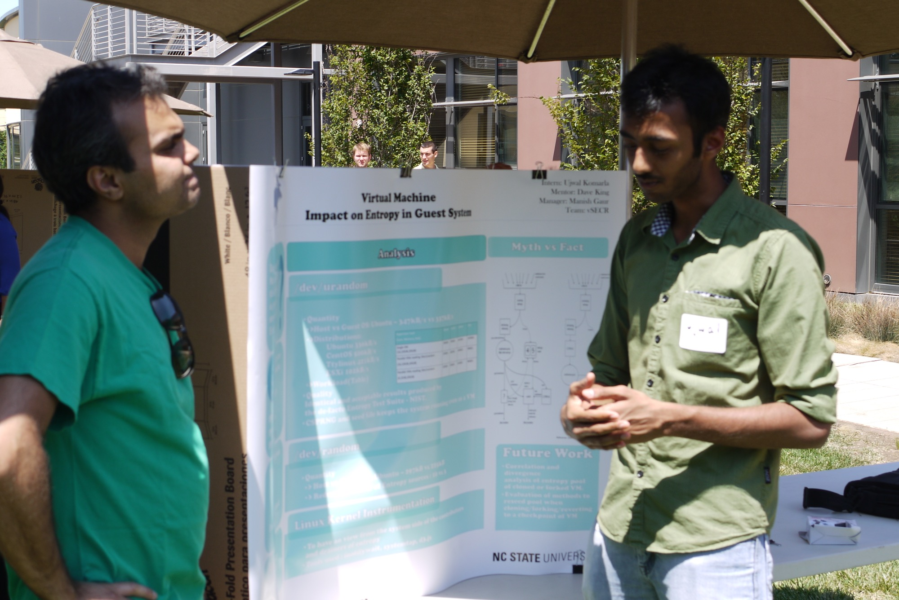
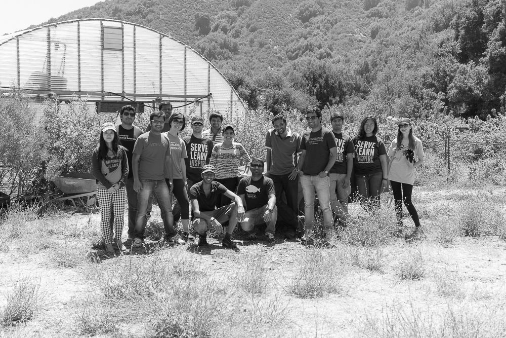
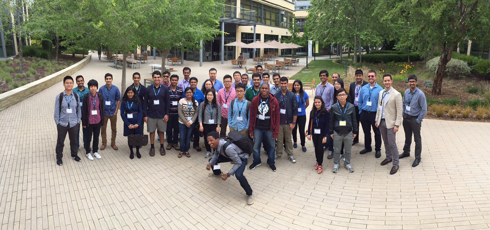

Your browser doesn't support the features required by impress.js, so you are presented with a simplified version of this presentation.
For the best experience please use the latest Chrome, Safari or Firefox browser.
Also, the presentation, isn't supported on Mobile devices.
What is entropy?
And, why is it important?
What does virtualization bring to the table?
Measure of randomness
In computing, entropy is the randomness collected by an operating system or application
What is entropy?
And, why is it important?
What does virtualization bring to the table?
Use in cryptography (Disk encryption, Secure wipe of disks, Secure sw access points – session/public keys)
or other uses(N/w seq numbers) that require random data.
This randomness is often collected from hardware sources, either pre-existing ones such as mouse movements
or specially provided randomness generators.
Weak can lead to session hijacking, disclosed secrets, and forged identities
What is entropy?
And, why is it important?
What does virtualization bring to the table?
Virtualization and probable issues - Sync, Coalescing, Bypass technique
Linux kernel generates entropy from inter-arrival keyboard timings, mouse movements, and IDE timings,
stored in individual pools. Relatively interleaved and exposed as a random character data
Journey to unravel the mystery
of
ever elusive question.
PR850945
Are my SSH keys and other security tokens generated by truly random numbers in a VM?
Quantity - Oracle Web logic
Does
Virtualization Impact
Entropy in GOS?
Are my SSH keys and other security tokens generated by truly random numbers in a VM?
Quantity - Oracle Web logic
What are we evaluating?
Evaluate and compare entropy quality between system running on phy and as vm -done by running NIST test suite
Quantify the data rate of entropy gathering/delivery by pulling from /dev/urandom.
brought us to the question on test bed
The test bed?
Ability to look into and understand the architecture, we discarded windows. Also, taking into consideration the customers who are interested in this issue, we choose linux.
Narrowing down, we did
Platform test for /dev/urandom
| Distribution |
Ubuntu |
Cent OS |
| Platform |
Physical |
ESXi |
Physical |
ESXi |
| Data Rate(kB/s) |
347 |
337 |
523 |
498 |
Quality, Quantity
Quality analysis results obtained from NIST placed no obvious issue in running the OS as VM over Physical.
Quantity vary but on both +/- sides. Again, attributing no issues with VM compared to Phy.
Leading us to
Distribution test
| GOS |
Ubuntu |
Cent OS |
ttylinux |
| Data Rate |
336kB/s |
500kB/s |
421kB/s |
| Time(%)\OS |
Ubuntu |
Cent OS |
| User |
~2.54 |
~0.55 |
| Kernel |
~9.9 |
~12.0 |
Quality, Quantity
Though the data rates were similar across platforms, they varied between distros.
Test bed - SCSi, Kernel Version
Test display?(server version, stats build, seed file?)
But computing power!
Not until late, we figured out CPU usage(Gave up, since it is not us who are the cause of it and took us lot of different tests trying to figure out - seed file, stats build..)
Quantity test on /dev/random
| Platform |
Entropy Data
(3 Weeks Duration) |
| Physical |
297kB |
| Virtual |
225kB |
Identify contributors and drainers of entropy
- Tools used: System Tap,
iNotifyWait,
LSOF,
SAR,
d3.js
- System Workload: Quiet, Network, Disk, Network + Disk
- Test Conducted:
- Physical vs Virtual
- Physical vs Virtual(With entropy utilization)
- System with I/O devices : Mouse, Keyboard, Screen
- No workload(Quiet) with ramdisk and ASLR disabled
- Hypervisor Oversubscription
Automation of tests and instrumenting linux kernel with data visualization.
Observations
| Platform\Workload |
Quiet |
Network |
Disk |
Network+Disk |
| Physical |
588B |
27kB |
3kB |
30kB |
| Virtual |
582B |
13kB |
8kB |
21kB |
- Interrupt Sources
- Interrupt Coalescing
- Disk Sector Size
- Plots
Observations(Contd.)
Seed file - Solution for limited entropy during power up/ fresh install.
Recipe for disaster Clone, Checkpoint, Fork
Automate install, delete on start and shutdown using init.d
Future Work
- Analysis on divergence time and correlation of entropy with VM Clone/Fork/Checkpoint.
- Evaluate entropy pool reseeding techniques for above situations.
Thanks!
Opportunity, learning and experience, time
Going back through the journey with pictures


